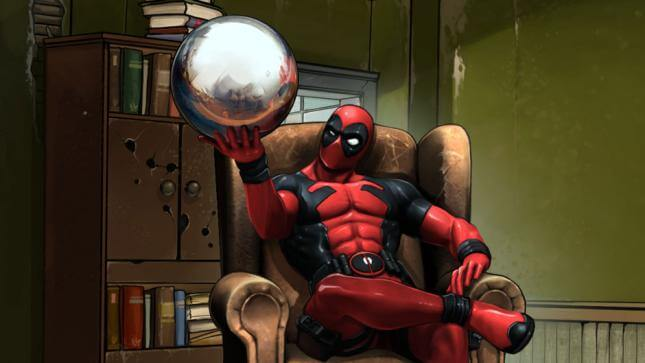
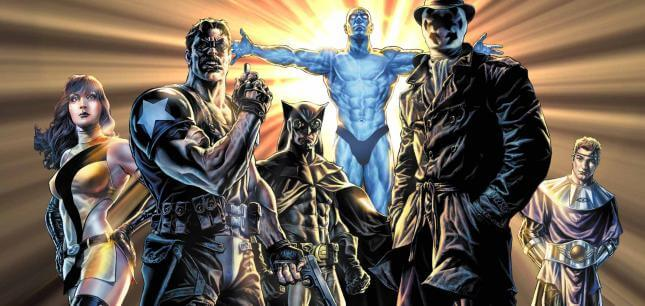
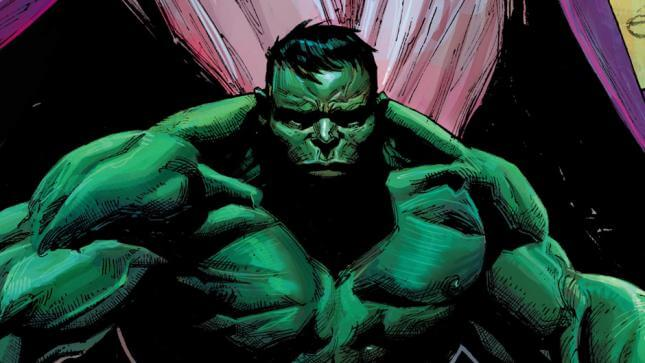

Hablar de inmortalidad en los cómics puede ser algo ambiguo. Hay un montón de personajes con niveles de invulnerabilidad tan altos que a veces olvidamos que en realidad pueden morir fácilmente (recordemos que unos gramos de Kriptonita usados inteligentemente pueden acabar con Superman).
Determinar qué es exactamente lo que hace inmortal a un personaje es complicado: hay quienes mueren y reviven, hay quienes se regeneran tan rápido que nunca llegan a morir, y están aquellos que sencillamente están por encima de todo y son, realmente, inmortales.
A continuación te presentamos una lista de los 7 personajes de los cómics con menos probabilidades de morir.
7. The Immortal
Con un nombre que deja bastante claro cuál es su poder, The Immortal es un personaje secundario en el universo de Invincible, la creación del escritor Robert Kirkman. En uno de sus peores momentos, Immortal sobrevive a una decapitación tempranera, aunque habría que aclarar que no es que le creció un nuevo cuerpo, sino que un científico tuvo que reconectar sus partes. Puede ser aparatoso, pero indudablemente es un poder útil.
Ver también: ¿Quién es Invincible?
6. Ra’s al Ghul
Uno de los enemigos más formidables de Batman, y según algunas cronologías, su mentor, Ra’s se mantiene fresco y algo juvenil gracias a su Lazarus Pit, un intrigante pozo lleno con un fluido que puede hasta regresar a alguien de la muerte. Sus largos años de vida lo han convertido en un personaje tan poderoso como misterioso.
5. Mr. Immortal
Mister Immortal, parte de los Great Lakes Avengers, es probablemente al que peor le cae su inmortalidad. No sólo es totalmente vulnerable al dolor, sino que además puede técnicamente morir (le sucede todo el tiempo, de hecho), y luego regresar a los pocos segundos, totalmente atormentado y atolondrado. Esto hace que esté deprimido buena parte del tiempo, y que intente suicidarse con frecuencia.
4. Wolverine
Nuestro canadiense favorito ha mejorado su sistema regenerativo con el tiempo, y de necesitar unos días para recuperarse de una golpiza, pasó a resistir hasta una bomba atómica como si fuera un estornudo. Recientemente se ha revelado que, en caso de morir, Wolverine viajaría a un limbo extraño en el que tiene que luchar con un samurai demoníaco para poder volver a la vida. Obviamente, siempre gana.

3. Deadpool
Nuestro segundo canadiense favorito. Sometido a experimentos similares a los de Wolverine, Wade Wilson emergió del laboratorio con una increíble habilidad regenerativa. Similar a Mr. Immortal, Deadpool siente dolor e incluso muere, pero siempre regresa, no importa que tan alto haya sido el daño. Esto en parte degenera en su locura y en su amor por La Muerte (personaje recurrente en Marvel Comics). Recientemente murió en el cómic, pero todos sabemos que regresará a la vida, probablemente con el estreno de su película.

2. Dr. Manhattan
Si tuviéramos que describir al Dr. Manhattan en una frase, seguramente diríamos que es una bomba atómica con libertad de movimiento, y con los poderes de un dios. Nacido de un experimento que terminó mal, el Dr. Manhattan es totalmente invulnerable (incluso el ingenio y la fortuna de Ozymandias no son suficientes para acabar con él), y por si fuera poco, es tan poderoso como el mejor dios de cualquier mitología.

1. Hulk
Bruce Banner está lejos de serlo, pero Hulk es básicamente inmortal. La monstruosidad verde cuenta con todos los mecanismos de defensa aptos para la supervivencia en cualquier situación: una piel impenetrable, una resistencia increíble, capacidad de sobrevivir incluso en otros planetas. Banner, no es el más fuerte, pero en la forma de Hulk, no hay quien lo mate.